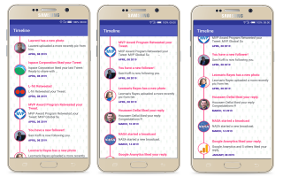
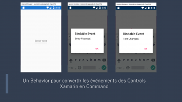
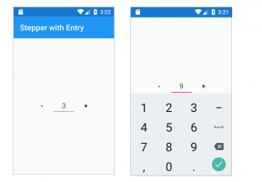

Également sur lioncoding

Les Champs calculés dans …
Dans cet article qui sera probablement la dernière de cette année 🎅2019🎅 …

Un Behavior pour convertir les …
Certains événements dans Xamarin.Forms ne supportent pas le Data …

Contrôle personnalisé dans …
👉 https://github.com/egbakou/CustomXamarinStepper le lien vers le projet …
Xamarin.Forms FingerPrint
De nos jours, la sécurité d’accès aux données personnelles stockées …
What do you think?
12 Responses

Upvote

Funny

Love
Soyez le premier à commenter.
Politique relative aux commentaires de lioncoding
Vos commentaires, remarques et encouragements seront les bienvenus !